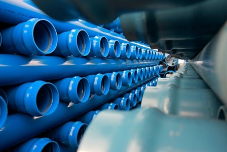

Finland Listed High-Tech Enterprise Listed on the Nasdaq Capital Market, ABC OY Limited is a high-tech manufacturer of fine finished steel products used by steel fabricators and other applications. Utilizing its fully automated facilities, state-of-the-art technology and a world-class manufacturing concept, ABC OY has grown to six integrated steel sheet and six steel pipe production lines with total production capacity of approximately 2.2 million metric tons. ABC OY specializes in manufacturing and developing diversified high-end fInished steel products, including hot-dipped galvanized steel, pre-painted galvanized steel, acid-pickled steel, cold-rolled steel , welded steel pipe products, and high-precision auto body sheet products.
